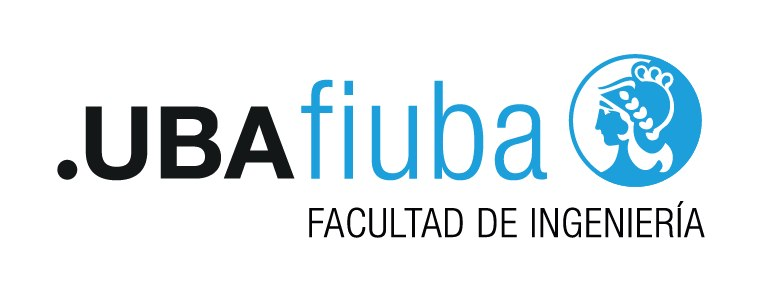

Intro Camejo — Introducción al Desarrollo de Software
Incertidumbre en épocas de AI
La IA cambia el panorama. Programar sigue siendo decirle a la computadora qué hacer.
2026
Intro Camejo

01Agenda
- .01El ruido
- .02Qué es programar
- .03Dos lenguajes
- .04El prompt
- .05La IA en el medio
- .06El ingeniero
Intro Camejo
02
Sección .01
El ruido
Intro Camejo
03
.01 — El ruido
Dos frases que se escuchan
- «No estudies sistemas, ya no te necesitamos.» — Mario Pergolini
- «Nadie tiene que programar: ahora todo el mundo es programador.» — Jensen Huang, CEO de NVIDIA
Intro Camejo
04
.01 — El ruido
¿Qué hacemos acá?
Al final de la clase lo contestamos.
Intro Camejo
05
Sección .02
Qué es programar
Intro Camejo
06
.02 — Qué es programar
Programar es decirle a la computadora qué hacer
- No es picar teclas. El código es el medio, no el trabajo.
- Le damos instrucciones y la máquina las ejecuta, al pie de la letra.
- Si la instrucción no cierra, el resultado tampoco.Tip
Intro Camejo
07
“
Any fool can write code that a computer can understand. Good programmers write code that humans can understand.
— Martin Fowler
Intro Camejo
08
Sección .03
Dos lenguajes
Intro Camejo
09
.03 — Dos lenguajes
No hablamos el mismo idioma que la máquina
Lenguaje natural
- El que usamos nosotros: español, charla, un mensaje.
- Tolera huecos, contexto e ironía.
- «Hacelo más lindo» significa otra cosa para cada persona.
Lenguaje formal
- Sintaxis cerrada y un significado por instrucción.
- La computadora no adivina la intención: ejecuta lo escrito.
- Bash, SQL, un lenguaje de programación: si está mal escrito, no corre.
Intro Camejo
10
Sección .04
El prompt
Intro Camejo
11
.04 — El prompt
El prompt está en lenguaje natural
- Un prompt es el pedido que le hacemos al modelo, en el idioma de todos los días.
- El modelo tiene que pasar de ese pedido a algo concreto: código, un comando, una respuesta.
- Esa lectura no es única. Elige la que le parece más probable y sigue.
Intro Camejo
12
.04 — El prompt
Por qué el prompt es ambiguo
- El lenguaje natural deja huecos: qué, para quién, hasta dónde, qué no hacer.
- Dos personas leen el mismo pedido y arman dos programas distintos.
- El modelo no frena a preguntar lo que el pedido no le pide que pregunte.Warning
Intro Camejo
13
.04 — El prompt
Cerrar la ambigüedad es nuestro trabajo
- Decidir qué problema se resuelve y cuál queda afuera.
- Poner límites, ejemplos y un criterio de «esto ya está».
- Leer lo que volvió y corregir el pedido, no solo aceptarlo.
- La IA escribe rápido. Nosotros decidimos si eso era lo que había que hacer.Tip
Intro Camejo
14
Sección .05
La IA en el medio
Intro Camejo
15
.05 — La IA en el medio
La IA es el tonto más rápido del mundo
- Los modelos son probabilísticos: no entienden lo que están haciendo.
- Contestan lo que es más probable, no lo que es verdadero.
- Si el pedido es nuevo o no cierra, alucinan: inventan una respuesta igual.
- Están entrenados para intentar siempre una respuesta.Warning
Intro Camejo
16
.05 — La IA en el medio
Lo que sí conviene delegar
- Lo tedioso: repetir, traducir, bosquejar.
- Picar código mecánico cuando el problema ya está cerrado.
- Se puede ir mucho más rápido. La velocidad no elige el destino.Nota
Intro Camejo
17
.05 — La IA en el medio
Hay que seguir pensando
- ¿Quién toma las decisiones?
- ¿Quién es responsable de lo que se entrega?
- ¿Quién tiene criterio sobre las prioridades?
Intro Camejo
18
Sección .06
El ingeniero
Intro Camejo
19
.06 — El ingeniero
Uno puede desaparecer. El otro, no.
El programador
- Traduce a código una especificación que ya estaba cerrada.
- Esa traducción es justo lo que el modelo hace cada vez mejor.
- Si el trabajo es solo escribir lo ya decidido, se puede delegar.
El ingeniero en Informática
- Entiende el problema antes de pedir una solución.
- Cierra la ambigüedad: alcance, restricciones, qué cuenta como «bien».
- Decide, prioriza y se hace responsable del resultado.
- El modelo no firma lo que entrega. Tip
Intro Camejo
20
“
My current strategy is to not read any of the code written by my agents. What I do instead is to surround the agents with extreme constraints.
— Robert C. Martin, Uncle Bob
Intro Camejo
21
.06 — El ingeniero
La confianza sale de las restricciones
- No lee línea por línea lo que escribe el agente. Así aprovecha la velocidad.
- Lo rodea de un filtro: tests, pruebas de aceptación, QA, métricas, cobertura, mutation testing.
- Confía en el resultado porque el código tuvo que pasar por todo eso.Tip
- Armar ese filtro sigue siendo trabajo de ingeniero.
Intro Camejo
22
Fin de la clase
Gracias
Saber qué pedirle, y saber cuándo está mal aunque compile.
Intro Camejo
23